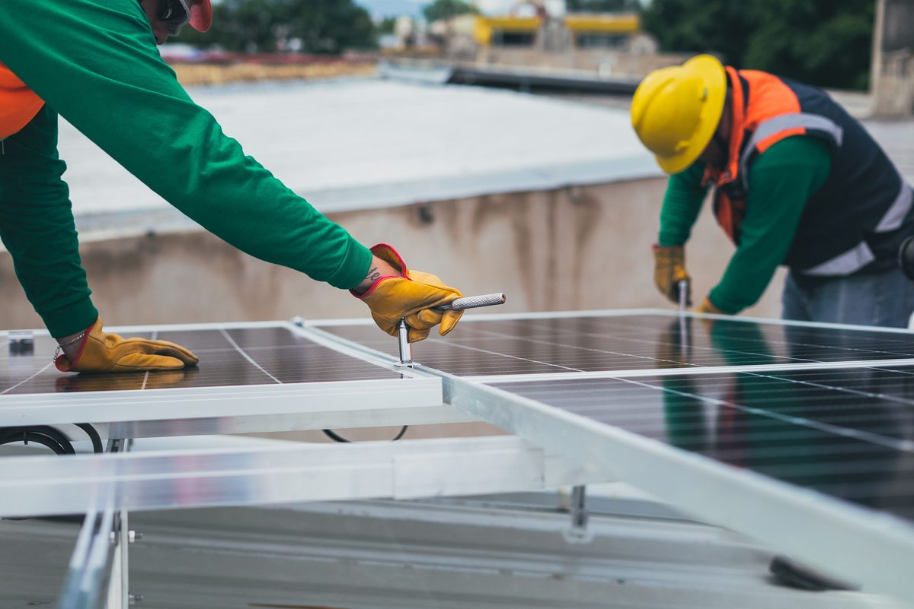

Solar equipment itself is generally reliable — panels, inverters, and batteries rarely fail on their own when properly sized and installed. Most real-world problems come from a small set of avoidable mistakes made during planning or installation. Knowing what these are ahead of time is the easiest way to avoid an expensive fix later.
1. Underestimating the load before sizing the inverter
This is one of the most common — and most damaging — mistakes. An inverter sized to the appliances someone remembers having, without a proper walkthrough of everything actually connected, often ends up undersized once real-world usage kicks in.
On one residential project, an engineering oversight left a 2-ton air conditioner out of the load calculation before the system was wired up — the inverter was pushed well beyond its rated capacity and failed. I've seen this exact mistake happen more than once: poor load estimation before connecting the system is one of the most common causes of inverter failure in the field, and it's almost always avoidable with a proper checklist like the one in our inverter calculator.
2. Undersized or incorrectly rated cables
Cable sizing is easy to get wrong because an undersized cable doesn't fail immediately — it just runs hot and wastes power as heat, which can go unnoticed for a long time before it becomes a real hazard. A common version of this mistake is using the same cable size for the entire run, ignoring the fact that DC string cabling (typically 8–10 mm², depending on string voltage) and AC-side wiring follow completely different sizing logic based on load or transformer rating for larger projects. Mixing these up, or simply guessing a "safe-looking" size instead of calculating it, is a mistake I've seen repeated across both small and large installations. Our cable calculator walks through the correct formula for this.
3. Charge controller settings left on default
Charge controllers need to be configured for the specific battery chemistry in use — the charging voltage and cycling profile for lithium is different from lead-acid. Leaving the controller on generic factory defaults instead of matching it to the actual battery bank leads to fast, uncontrolled charge and discharge cycles instead of the gradual, protected cycling batteries are designed for.
I've seen lead-acid batteries fail well before their rated cycle life simply because the charge controller settings were left on generic defaults instead of being matched to the actual battery bank. This is a five-minute configuration step that gets skipped far too often, and it's one of the most preventable causes of early battery failure.
4. Ignoring dust and environmental buildup
In dry or desert climates especially, panels that aren't cleaned on a regular schedule can lose a significant share of their rated output — sometimes 20-30% or more — long before anyone realizes there's a problem, because the system still "works," just at reduced capacity. See our full maintenance guide for a proper cleaning schedule by climate type.
5. Skipping a proper roof or shading assessment
Panels installed without checking for shading from nearby trees, buildings, or even other rows of panels can underperform significantly compared to their rated output — sometimes without anyone realizing shading is the cause, since the system still produces some power. A proper site survey before installation, not just after panels are already mounted, catches this early.
6. Mixing battery chemistries or ages in the same bank
Combining lithium and lead-acid batteries, or even old and new batteries of the same chemistry, in a single bank causes uneven charging and discharging. The weaker or different battery ends up cycling harder than the rest, degrading faster and dragging down the performance of the whole bank. Keep battery banks to a single chemistry and, ideally, the same age and condition.
7. Choosing the wrong system type for the situation
Installing a pure grid-tied system for someone who actually needs outage backup, or oversizing an off-grid system for someone with reliable grid access, both lead to real regret later — either an inverter that shuts off exactly when it's needed, or thousands of dollars spent on battery capacity that was never necessary. See our grid-tied vs off-grid vs hybrid guide to match the system type to the actual goal before buying equipment.
A simple pre-installation checklist
- List every appliance that will run on the system, including ones easy to forget (water pumps, seasonal AC units, workshop tools)
- Calculate running and starting loads properly — don't estimate from memory
- Size cables based on actual current and distance, not a guess
- Match charge controller settings to the exact battery chemistry installed
- Confirm the system type (grid-tied, off-grid, hybrid) matches the actual goal, not just the cheapest option
- Schedule a realistic cleaning and inspection routine from day one
Frequently asked questions
Are these mistakes more common in DIY installations or professional ones?
Both, though for different reasons. DIY installations more often suffer from incomplete load calculations and cable sizing errors due to inexperience. Professional installations more often suffer from rushed site surveys or generic default settings applied across multiple projects without customization.
Can most of these mistakes be fixed after installation, or do they require starting over?
Most are fixable without a full rebuild — an undersized inverter can be replaced, cables can be upgraded, and charge controller settings can be reconfigured. The real cost is usually the wasted equipment or reduced performance in the meantime, which is why catching these before installation is far cheaper than fixing them after.
Is it worth paying for a professional site survey even for a small system?
For anything beyond the simplest plug-and-play setup, yes. A short site visit that catches a shading issue or a load calculation error can save far more than its cost in avoided equipment mismatches down the line.